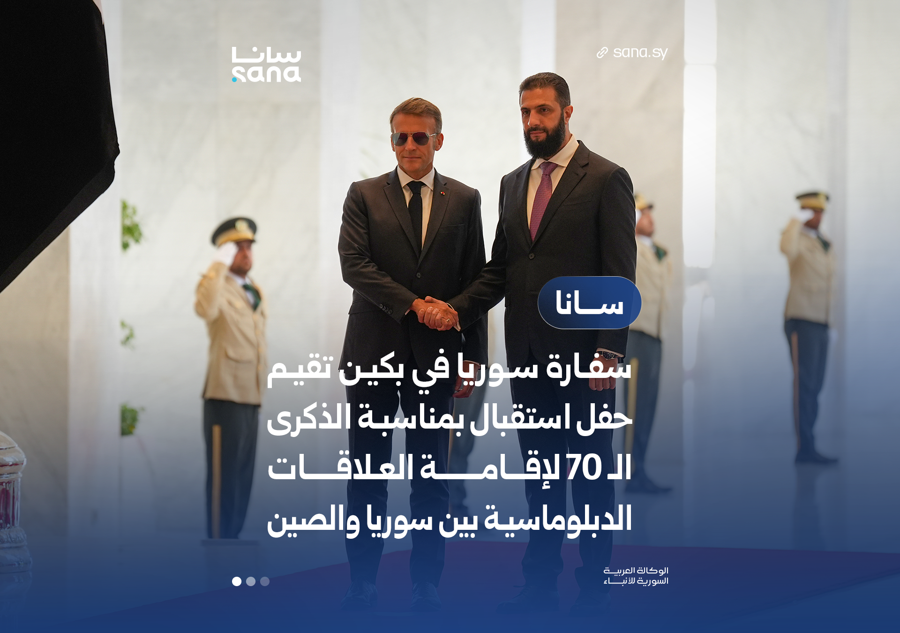

صور الألبوم 1
اسحب الصور لترتيبها، ونزّل كل صورة من الزر الموجود أسفلها.
الصور تُعالج داخل المتصفح. صدّر عملك قبل إغلاق الصفحة.
استوديو الصور • 1920 × 1350

اسحب الصور لترتيبها، ونزّل كل صورة من الزر الموجود أسفلها.
الصور تُعالج داخل المتصفح. صدّر عملك قبل إغلاق الصفحة.